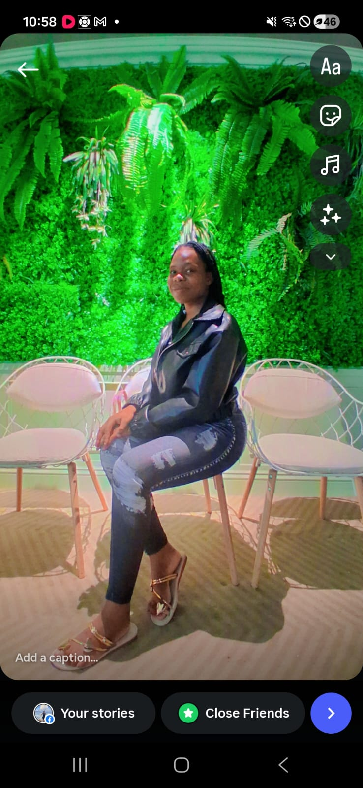

Hi, I'm
Lucia Lugomba
A second-year International Service Management student at Tzu Chi University with a profound passion for Information Technology. Bridging the gap between global service strategies and technical innovation.

Year 2 Student
International Service Management, Tzu Chi University
IT Enthusiast
Passionate about leveraging technology for service optimization.
Global Perspective
Originating from Malawi, adapting to international tech landscapes.

Bridging Cultural Insights with Technological Solutions
Growing up in Malawi and later moving to Taiwan for my studies has given me the opportunity to experience different cultures, environments, and ways of thinking. These experiences have helped me develop a multicultural perspective that influences the way I approach challenges and interact with people.
I am currently pursuing my second year of International Service Management at Tzu Chi University. Although my major focuses on service and management, I have developed a deep interest in Information Technology and the role it plays in modern organizations. My goal is to build a career at the intersection of Information Technology and service management.
Origin
Malawi
Current Location
Taiwan
Tzu Chi University
International Service Management
Second-year student developing knowledge in:
- • Service operations and management
- • Communication and collaboration
- • International environments
- • Organizational problem-solving
- • Digital transformation
IT & Technology Focus
Exploring how digital solutions improve services:
- • Web development fundamentals
- • Information systems
- • Digital innovation
- • Technology-based service improvement
- • Organizational digital strategies
Discovering My Passion for Technology
My interest in Information Technology has developed through curiosity about digital systems and the way technology can make everyday tasks more efficient. As I continue my university studies, I have become increasingly interested in areas such as web development, digital solutions, information systems, UI/UX design, and technology-based service improvement.
Rather than simply learning technology for its own sake, I want to understand how technical solutions can be applied to real situations. My long-term goal is to continue building my technical skills, work on meaningful projects, gain professional experience, and eventually contribute to innovative technology solutions that create real impact.
💡 My Philosophy:
Every project is an opportunity to learn something new and move one step closer to my professional goals.
Technology & Professional Abilities
Technical Skills
Professional Skills
Why These Skills Matter: Successful technology projects require not only technical knowledge but also the ability to understand users, communicate ideas, and work effectively with others.
Technology With a Service-Minded Perspective
As an International Service Management student with an interest in IT, I bring a combination of technical curiosity and a strong understanding of people and services. I am interested in creating clean and responsive websites, exploring digital solutions, designing simple and user-friendly interfaces, and finding ways technology can improve service experiences.
🌍 Global Perspective
Multicultural background allows me to approach problems from different perspectives and consider how technology can serve people with different needs.
📚 Learning-Focused
Motivated to understand the problem first and then explore how technology can provide practical solutions through real-world projects.
Building Through Practice
Personal Portfolio Website
My current project exploring web design, responsive layouts, user experience, and personal branding.
- ✓ Web design and development
- ✓ Responsive layouts
- ✓ User experience design
- ✓ Visual presentation
Upcoming Projects
As I continue learning, I plan to add more projects demonstrating my growing abilities:
- → Web development projects
- → Information systems applications
- → Digital service solutions
- → Technology-based innovations
Currently Learning
Technology Stack
Currently expanding my knowledge in:
- ★ Advanced web development
- ★ JavaScript frameworks
- ★ UI/UX design principles
- ★ Database management
- ★ IT fundamentals
- ★ Artificial Intelligence applications
My Learning Approach
I believe technology is constantly changing, so continuous learning is essential:
- → Understand the fundamentals
- → Apply learning to projects
- → Identify weaknesses
- → Continuously improve
- → Stay curious and adaptable
From Malawi to Taiwan
Coming from Malawi and studying in Taiwan has given me a unique international perspective. Living and studying in a different country has challenged me to adapt to a new culture, environment, language, and academic system.
These experiences have strengthened my independence, adaptability, communication skills, and appreciation for cultural diversity. I believe this global perspective is valuable in technology because modern IT projects often connect people and organizations across countries and cultures.
Cultural Strengths
- ✓ Independence and self-reliance developed through international transition
- ✓ Adaptability to diverse environments and challenges
- ✓ Enhanced communication across cultural boundaries
- ✓ Unique perspective on solving global problems
Where I Want to Go
My vision is to develop into a technology professional who can combine IT, service management, and international experience to create meaningful digital solutions.
I want to continue developing my technical abilities while gaining practical experience through projects, internships, collaborations, and professional opportunities. In the future, I hope to contribute to organizations that use technology to improve services, solve problems, and create better experiences for people.
💡 Innovation
Create solutions that make a real difference
🌟 Growth
Continuously learn and improve my skills
🚀 Impact
Contribute to meaningful projects and organizations
Let's Work Together
I am open to connecting with people interested in technology, digital innovation, and IT opportunities.
Contact Information
-
📞
Phone
+886 978 984 860
-
📍
Location
Taiwan
-
💼
Professional Profile
International Service Management Student • IT Enthusiast
Connect With Me
Whether you have a project idea, an internship opportunity, a collaboration proposal, or simply want to connect:
Let's connect, share ideas, and explore how technology can create better solutions.